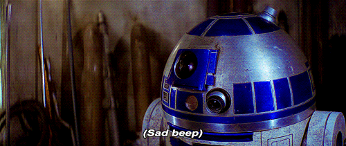

<section class="container">
    <ivl-swasky></ivl-swasky>
    <ivl-swatitle title="Not found" subtitle="R2D2 probably accidentally deleted the page we're looking for :(">
    </ivl-swatitle>
    <article class="image-container">
        <picture class="image-container__picture image-container__picture--not-found">
            
        </picture>
    </article>
</section>